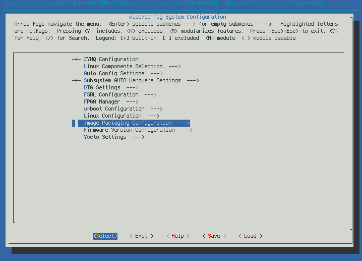

使用 Docker 製作 PetaLinux 2022.1 的 OS image
安裝 docker
Ubuntu
ArchLinux
建立 docker image
Ubuntu 20.04
Dockerfile.ubuntu20.04
檢視 docker image 建立結果
Ubuntu 18.04
Dockerfile.ubuntu18.04
檢視 docker image 建立結果
建立及啓動 docker container
建立和檢視 docker container
option -it 要指定，才能正確進入 container
檢視 docker image 建立結果
例如建立一個依附於 image 0ff139a32236 的 container
啓動 container
例如啓動 container 3b36f11cd26e
進入 container
例如進入 container 3b36f11cd26e
安裝 PetaLinux 2022.1
完整安裝步驟請見 PetaLinux Tools Documentation: Reference Guide (UG1144) 的 Installation Steps
下載 PetaLinux 2022.1 installer
須要註冊帳號
下載後依照 PetaLinux Tools Documentation: Reference Guide (UG1144) 的 Installing the PetaLinux Tool 的說明進行安裝
在 docker container 中安裝 PetaLinux 可有幾種選擇
- 直接安裝在 docker container 中
- 優點: 簡單
- 缺點:
- 若有超過一個 docker container 會用到 PetaLinux，例如 Ubuntu 20.04 和 18.04，則會有多份 PetaLinux
- 若不小心移除未更新到 image 的 container，則所有 container 中的資料都會消失
- 安裝在 host，再連接進 docker container
- 優點: docker container 可共用 PetaLinux
- 缺點:
- 建立 docker container 時須指定 volume 連接
- host 及 container 共用 volume 的 user 及 group ID 要相同
直接安裝在 docker container 的方式依照 reference guide 的說明安裝即可
以下爲安裝 PetaLinux 在 host 的說明
- PetaLinux 2022.1 installer:
petalinux-v2022.1-04191534-installer.run - 共用 volume:
/opt - PetaLinux 安裝目錄:
/opt/petalinux/2022.1
Create docker container
以 host 及 docker container 共用 /opt 目錄爲例
image 和 container ID 請以實際的 ID 爲主
--privileged: 給 container 更多的權限來讀寫 device 等-v: 就是--volume，連接 host 及 contaiuner 的 volume-v /opt:/opt: 把 host 的 /opt 目錄連接到 container 的 /opt 目錄
Start and attach container
安裝 PetaLiinux
In host
- Create directory /opt/petalinux and change owner
- 把下載的 PetaLinux installer
petalinux-v2022.1-04191534-installer.run複製到/opt/petalinux
必要時要變更 owner
In container
- 執行
/opt/petalinux/petalinux-v2022.1-04191534-installer.run安裝 PetaLinux 到/opt/petalinux/2022.1
Build PetaLinux OS image
建立 PetaLinux project 的詳細步驟請見 PetaLinux Tools Documentation: Reference Guide (UG1144) 的 Creating a Project 的說明
-
進入 container
-
建立工作目錄並進入工作目錄
- 例如 /opt/petalinux/project
-
進入 PetaLinux environment
-
建立 ULinkSat SDR 專案
-
從 Google driver 下載 PetaLinux BSP file ULinkSat-SDR.release.bsp
-
-
Setup system configuration
- 例如變更 rootfs



詳細 petalinux-config 操作見 PetaLinux Tools Documentation: Reference Guide (UG1144) 的 Customizing the Project
-
若無需變更，可執行以下指令建立 build directory
- 例如變更 rootfs
-
調整其他設置
-
例如指定 PetaLinux download cache 來減少 build image 的時間，以下說明用 symbolic link 方式連接 download cache 路徑
/opt/petalinux/cache/2022.1/downloads
-
-
Build project
-
建立 image packages
成功後，image packages 在
images/linux目錄
燒錄 OS image
ULinkSat-SDR.release.bsp 的 rootfs 爲 Ext4，可以需求執行 petalinux-config 調整
-
Ext4
-
利用 tar.gz 包
-
參考 PetaLinux Tools Documentation: Reference Guide (UG1144) 的 Booting PetaLinux Image on Hardware with an SD Card 說明製作 bootable SD card
-
或參考 prog_ext4_sd.sh 進行燒錄
-
-
利用 WIC image
-
製作 WIC image 的方式見 PetaLinux Tools Documentation: Reference Guide (UG1144) petalinux-package --wic Command Examples
-
petalinux-package --wic製作出的 image 有 6GB，要減少燒錄時間可參考 prog_wic.sh 利用 bmap file 的方式行之注意:
實作發現用 bmap file 會出現開機失敗情形，對策是重新複製 BOOT.BIN 帶 boot partition 及可，prog_wic.sh 有進行這個修正
-
-
-
JFFS2
- Setup JFFS2 boot
-
設置 JFFS2 rootfs 的方式可參考 PetaLinux Tools Documentation: Reference Guide (UG1144) Configuring JFFS2 Boot，但要注意坑不少
-
若僅切換 ULinkSat SDR 爲 JFFS2 boot，可參考以下 shell script
-
- 燒錄 JFFS2
-
不建議用 PetaLinux Tools Documentation: Reference Guide (UG1144) 的方式燒錄，用 Vitis 比較穩妥
-
Vitis 不用安裝在 docker container，可安裝在其他平臺
-
安裝 Vitis
-
燒錄 flash 需要 Xilinx 的 xsct，PetaLinux 沒有，須安裝 Vitis
-
從 https://www.xilinx.com/support/download/index.html/content/xilinx/en/downloadNav/vitis.html 下載 Vitis installer
-
安裝方式請自行參考 Vitis Release Notes And Installation Guide (UG1742) 的 Vitis Software Platform Installation
-
-
燒錄
- SDR 切換到 JTAG mode
- 使用 Vitis GUI
- 請直接參考 Vitis document
- Vitis CLI program_flash
- 參考 prog_jffs2.sh
-
- Setup JFFS2 boot